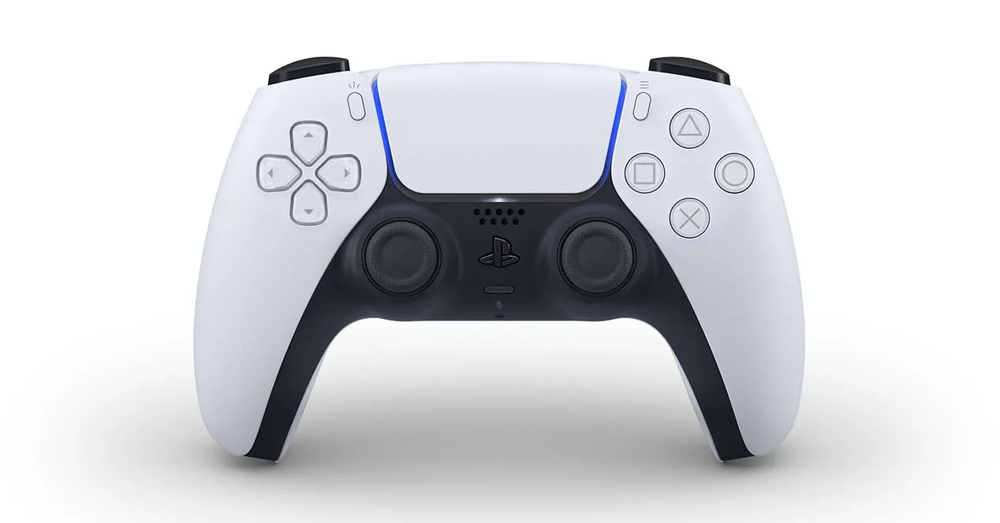
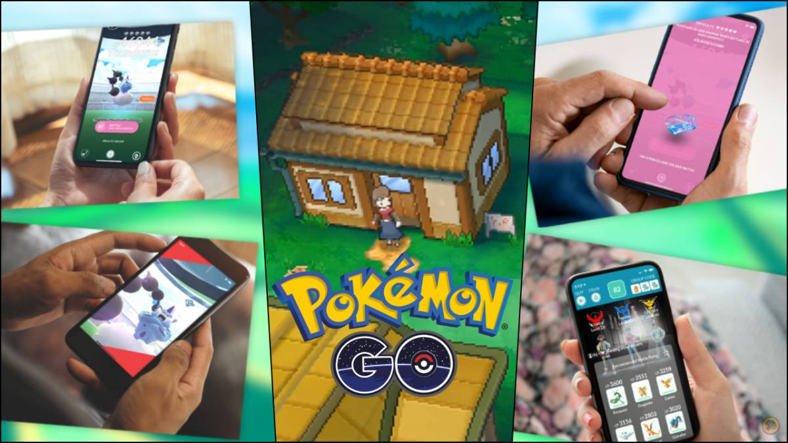

Se busca poner a disposición de las autoridades sanitarias en todo el mundo datos de movilidad y de contactos entre individuos que permitan hacer un mejor seguimiento y predicciones de las infecciones.
Apple y Google anunciaron este viernes una alianza sin precedentes en un entorno de gran competencia en la industria tecnológica y revelaron que están trabajando conjuntamente en dos proyectos para usar datos de movilidad de las personas en la lucha contra la pandemia de COVID-19.
La idea es aprovechar la ubicuidad de los sistemas operativos para móviles de Apple con iOS y Google con Android para recabar y poner a disposición de las autoridades sanitarias en todo el mundo datos de movilidad y de contactos entre individuos que permitan hacer un mejor seguimiento y predicciones de las infecciones de COVID-19.
Se trata de un planteamiento que ya se ha llevado a cabo en países asiáticos como China y Corea del Sur y que plantea serias dudas acerca de la privacidad de la información de los usuarios, algo que Apple y Google dicen haber sido capaces de mitigar mediante el uso de Bluetooth (una tecnología menos invasiva que, por ejemplo, la geolocalización) y el carácter "voluntario" de los programas.
La alianza entre los propietarios de los dos sistemas operativos para móviles más presentes en el mundo tendrá dos patas: por un lado, ambas compañías sacarán en mayo una serie de interfaces de programación de aplicaciones (API) compatibles tanto con Android como con iOS.
Las nuevas API que saldrán en mayo, sin embargo, permitirán una comunicación fluida entre Android e iOS con la idea de que las aplicaciones oficiales que creen las distintas autoridades sanitarias puedan descargarse tanto en iOS como en Android y la información que recaben pueda ser agregada sin importar cuál es el lenguaje informático de cada aparato.
Las profesiones tecnológicas más demandadas del momento
Ante la crisis actual del Covid-19 y su impacto en el mercado laborar, muchas profesiones que ya tenían una gran demanda antes de la crisis, ahora se han vuelto mucho más atractivas ya que se pueden ejercer de forma remota y cada día crecen más las ofertas de empleo en el sector digital. A continuación, NEOLAND destaca las profesiones y perfiles más demandados:
Diseño UX/UI: Las empresas son cada vez más conscientes de la necesidad de centrar sus productos digitales en el usuario, por esta razón el diseño de Interfaces (UI) y la Experiencia de Usuario (UX), se han convertido en una de las profesiones más demandadas en la actualidad.
Desarrollo Web: Todos los productos digitales necesitan desarrollo web y JavaScript es el lenguaje de programación más utilizado en la actualidad, por esta razón, el desarrollador web Full Stack es una de las profesiones más solicitadas entre las empresas del sector tecnológico.
Data Science: El Big Data genera enormes cantidades de datos y el Data Science se encarga de convertirlos en información útil para tomar decisiones en las compañías. Por esta razón, esta profesión se ha posicionado como una de las más demandadas por las empresas digitales.
Programación APPs: Como todos sabemos, las Apps son aplicaciones de software que se instalan en dispositivos móviles como Smartphones o Tablets. Para crear todas estas aplicaciones se necesitan muchos profesionales especializados en desarrollo para Android o iOS.
Product Management: Todos los productos digitales cuentan con la figura del Product Manager, que es el responsable de la estrategia, planificación, lanzamiento y seguimiento de un producto. Su misión es coordinar a todos los equipos implicados en el proyecto.
Marketing Digital: El marketing digital es la unión de las acciones y estrategias publicitarias que una empresa realiza en internet para vender sus productos o servicios. Actualmente, estas empresas necesitan muchos profesionales con conocimientos técnicos muy sólidos.
Coronavirus: así funciona el robot argentino que desinfecta habitaciones con luz ultravioleta
La firma argentina UVR Robotics presentó un prototipo de robot autónomo que ofrece un sistema de desinfección de ambiente mediante la emisión de rayos ultravioletas con el objetivo de eliminar focos infecciosos en diferentes tipos de superficie. Equipado con diversos sensores de escaneo 3D del entorno para trazar la ruta de trabajo sin intervención humana.
El robot de UVR Robotics cuenta con una computadora integrada, cámara y sensores que gestionan el funcionamiento del módulo de desinfección, equipado con 16 tubos de 30w de luz UV-C dispuestos en 360 grados. La intensidad de la emisión se puede controlar según el entorno, y está equipado con un banco de baterías y un sistema de movimiento omnidireccional.
Sus creadores destacan la capacidad de operar de forma remota y autónoma para evitar la exposición de los humanos en tareas de limpieza en ambientes contaminados, en un proceso de desinfección rápido que no requiere de agentes químicos.
El modelo funciona de forma similar a otros equipos ya disponibles en el mercado como UVD Robots, un robot desarrollado por una firma danesa que desinfecta habitaciones, pasillos y espacios comunes de los hospitales mediante un sistema de luz ultravioleta. Con un costo estimado de 80 a 90 mil dólares, el robot realiza un proceso de desinfección con rayos ultravioletas en solo dos minutos, en una tarea que demanda entre 10 a 15 minutos de forma manual. De esta forma, el robot puede liberar a las personas en asistir a pacientes.
La diferencia del equip argentino está en su costo, con un precio final estimado de 3000 a 10.000 dólares . El proyecto se encuentra en etapa de producción y se espera que estén listos en dos o tres semanas los primeros 20 robots de UVR Robotics.
¡Oficial! Remake de Resident Evil 4 llegaría en 2022
Este domingo Capcom Production Studio 4ha dado a conocer que el videojuego de la saga Resident Evil 4 se estaría cocinando hasta el 2022.
Este domingo se ha dado una noticia que para mucho ha tomado por sorpresa, pero para otros ha decepcionado, luego de que los rumores apunten que sobre el desarrollo de una octava parte de la saga de Resident Evil, ahora Capcom en paralelo ya comenzó a trabajar en un remake de una de las entregas más populares de la franquicia para la saga número 4.
Cabe mencionar, que todos los días surge algo nuevo con Resident Evil, sea la llegada del remake de Resident Evil 3, los rumores en torno a la probable premisa y gameplay de Resident Evil 8, o a las preguntas sospechosas que esta haciendo el desarrollador y publisher Capcom y que pueden estar relacionadas con la llegada de un nuevo remake, pero ahora dieron a conocer que será hasta el 2022 que este saldrá a a luz pero retrasos de la pandemia.
De acuerdo a VGC apunta a que ese próximo remake será el del mítico Resident Evil 4, el juego que reinventó la franquicia hace 15 años con un giro hacia la tercera persona -y que además impuso escuela con su perspectiva desde el hombro, sin embargo, evidentemente tendrá unos gráficos mejores renovados, así como más misiones y personajes para esta ocasión
En este mismo sentido VGC mencionó que el desarrollo del remake de Resident Evil 4 correrá a cargo de M-Two, un nuevo estudio fundado por Tatsuya Minami, antiguo líder de PlatinumGames (estudio que a su vez fue inaugurado por extrabajadores de Capcom). Por lo que promete ser una inminencia para el 2022.
Más allá de esto, tengan en cuenta que estas son palabras mayores para Capcom. A pesar de que la trilogía original siempre ha sido elogiada, Resident Evil 4 es el videojuego más valorado de todos por la crítica y marcó un cambio no menor, volcando todo a la acción y presentando a nuevas criaturas que se volvieron rápidamente en sinónimo de la marca como son los parásitos conocidos como “Las Plagas”.
Los nuevos detalles de PS5 están al caer
Aunque desconocemos cualquier tipo de indicio que nos lleve hacia una posible presentación de PS5, hoy nos topamos con una publicación que revela que el próximo número de la revista oficial de PlayStation para el mes de julio traerá detalles relacionados con los juegos que llegarán a PS5 y cómo se jugarán. El vídeo insertado en el tweet apunta a que la revista, que llegará a las tiendas el próximo 2 de junio, revelará los próximos juegos de PlayStation 5, así que, haciendo cuentas, podríamos esperar un posible evento oficial durante el mes de mayo.
Es una fecha que nos cuadra si tenemos en cuenta que Microsoft hará lo propio en las próximas semanas, ya que el mismísimo Phil Spencer ha declarado que muy pronto conoceremos los detalles en torno a los nuevos juegos que se estrenarán con Xbox Series X.
¿Cuándo será el evento de PlayStation?

Aunque no hay nada oficial, podemos hacer una serie de conjeturas para sacar algunas conclusiones que nos podría llevar al supuesto evento, y es que, si nos fijamos en los detalles, podremos revisar que la revista oficial de PlayStation pertenece al grupo Future Network, en el cual también está presente el medio GamesRadar. Dicho medio está preparando el evento Future Game Show, que sería algo así como un evento en el que recopilar los lanzamientos que tendremos en el 2020 y más allá.
Teniendo en cuenta que se trata de un evento que rellenará el hueco dejado por el E3 (aunque se celebre unas semanas antes), tendría bastante sentido que Sony lo utilizara como lanzadera para mostrar al mundo los juegos que llegarán a su próxima consola. Algo que no nos cuadra es que la marca muestre los juegos sin haber presentado todavía el aspecto exterior de la consola, por lo utilizar un evento de terceros para enseñar el diseño de PS5 sería algo bastante extraño.
¿Significa eso que habrá otro evento adicional antes del Future Games Show? Eso suena a demasiados shows, así que tendremos que hacer lo de siempre: esperar pacientemente y ver qué nos tiene preparado la marca para las próximas semanas. Sea como sea parece que la presentación final de PS5 está cerca, así que probablemente la espera no se alargue demasiado.
Pokémon GO estrena las Incursiones desde casa, ya disponibles: cómo funcionan

Tras confirmarse que sería posible hacer incursiones remotas desde la comodidad del hogar durante el coronavirus, ya están habilitadas para todos.
Las incursiones remotas ya están disponibles en Pokémon GO. Tras una espera de varias semanas desde que Niantic anunció que estaba trabajando en esta posibilidad, todos los jugadores del popular título de iOS y Android ya pueden jugar raids desde su casa ahora que nos encontramos confinados como consecuencia del coronavirus (COVID-19). La compañía ha emitido un comunicado explicando su funcionamiento en detalle.
Cómo jugar incursiones desde casa en Pokémon GO
Para participar en una incursión desde casa será necesario disponer de un pase de incursión remota. Según vemos en el propio juego, se ha habilitado un pack de 3 unidades de incursiones remotas por tan solo 1 Pokémoneda. A partir de ahí, cada pase tiene un coste de 100 Pokémonedas (0,99 euros). Este pase será imprescindible para poder participar en aquellas raids fuera de nuestro alcance. Adicionalmente, Niantic ha habilitado lo siguiente:
Una tarea de investigación de campo adicional al día sin tener que girar Poképaradas.
El Pokémon compañero se acercará a las Poképaradas cercanas y nos traerá regalos para que los podamos enviar a los amigos.
Podemos dar más poder a nuestros Pokémon hasta alcanzar los PC deseados con todos los Caramelos y Polvos Estelares necesarios al mismo tiempo.
Los objetos Trozo Estrella, un Huevo Suerte o Incienso se pueden usar más veces el para ampliar su efecto y superar el límite de 30 minutos al que estamos acostumbrados. Es decir, no hace falta que se acabe su efecto para volver a usarlo: podemos encadenar varios al mismo tiempo.